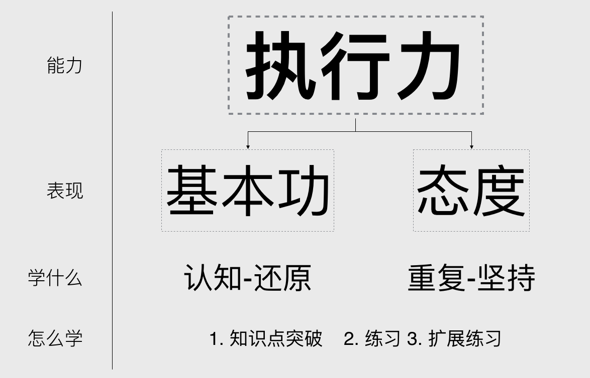

最初阶段我们最重要的当然是执行力。

我们去认识一些事物，并接受吸收，然后临摹还原，这样反复后最终成为自己的东西。
| 能力类型 | |
|---|---|
| 用户分析 | 1.通过用户反馈发现问题； 2.找到目标用户，做简单的用户调研。 |
| 需求挖掘 | 1.通过数据发现产品需求； 2.思维导图法； 3.核心需求提炼。 |
| 产品调研 | 1.针对功能点的调研； 2.针对独立产品的调研。 |
| 功能和流程 | 1.针对已有功能的优化； 2.功能点的设计； 3.单通道流程图； |
| 原型设计与PRD | 1.页面流程与页面结构图 2.原型设计的基本原则； 写需求文档； |
| 项目管理 | 1.上线后的邮件怎么写？ 2.产品评审怎么做？ |
| 上线前后产品运营 | 1.上线前准备； 2.上线后的数据监控和分析； 3.找到种子用户； |
| 合作与沟通 | 怎么提问 |
▲ 初级阶段我们需要掌握的知识点
接下来我们就围绕这些具体的知识点展开学习。